Advanced global illumination
Table of Contents
- Advanced global illumination
- The Physics of Light Transport
- Monte Carlo Methods
- Strategies for Computing Light Transport
- Stochastic Radiosity
- Hybrid Algorithms
- The Quest for Ultimate Realism and Speed
Advanced global illumination note.
<!– more –>
Advanced global illumination
The Physics of Light Transport
Models of Light
为了捕捉光的不同行为，在模拟中使用多种光的模型。光的某些行为可以通过将光当作一种波来解释，例如：衍射 diffraction 和干涉 interference，光的另外一些行为可以通过将光当作粒子流来解释，例如：光电效应 photoelectric effect
Quantum Optics 量子光学
量子光学是光的基础模型，其解释了光的波粒二象性。量子光学可以解释光在微小尺度上的行为，例如，电子的行为。但是，量子光学对于计算机图形学中生成图片来说，其考虑了太多的细节，这是没必要的。
Wave Model 波动模型
波动模型是简化的量子模型，其通过麦克斯韦方程来表述。该模型可以描述衍射、干涉和偏振，当和光交互的物体尺寸和光的波长可比时，就会引发这些现象。这些现象在日常生活中很常见，例如：水面浮油或鸟的羽毛上可以看到的鲜亮的颜色。但是，通常计算机图形学中会忽略这些效果。
Geometric Optics 几何光学
几何光学是最简单的，在计算机图形学中应用最广泛的模型。该模型假设光的波长比物体要小很多。该模型假设光可以被发射、反射、透射。该模型对光的行为还作了如下假设：
- 光沿直线传播。例如：光的衍射不会被考虑
- 光是瞬间穿过介质的。该假设要求光速为无限大的。该假设是实践上的要求，其保证光能量在场景中的分布是恒定的，这样全局光照算法就可以对其进行计算。
- 光不被外界因素影响。例如，重力和磁场。
Radiometry
全局光照算法的目标是计算场景中光能量的稳定分布。为了计算该分布，我们需要表示光能量的物理量。辐射度学(Radiometry)就是物理中度量光能量的研究领域。
光度学(Photometry)是度量感知到的光能量的研究领域，其和辐射度学不同。人类的视觉系统只可以感知波长为 380 纳米到 780 纳米范围的光。人眼对该范围光的敏感性已经被标准化，光度学会将这种敏感性考虑在内。光度学物理量可以从对应的辐射度学物理量推导而来，因此全局光照算法使用辐射度学物理量进行计算。
Radiometric Quantities
Solid Angle
立体角是球面积与球半径平方值的比。平面角是圆的弧长与半径的比。
在球面坐标系中，任意球面的极小面积为 \(dA = (rsinθdφ)(rdθ) = r^2(sinθdθdφ)\) ,因此，极小立体角为 \(dΩ = sinθdθdφ\)
立体角的国际制单位是球面度(sterandian)简写为 sr。 \(1sr = 1m^2/m^2=1\)
Radiant Power or Flux 辐射功率|辐射通量
Irradiance 辐射照度
Radiant Exitance or Radiosity 辐射出射度|辐射度
Radiance 辐射率
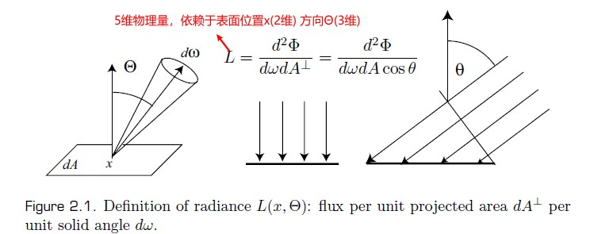
Transport Theory 传播理论
传播理论可以处理物理量（例如，能量、电量、质量）的传播和流动。下面利用传播理论把光当作流动的光子来形式化表示辐射物理量。
假设光子的密度为 p(x)，其定义了在 x 位置单位体积中的光子数量。则微小体积 dV 内的管子数量为 p(x)dV。
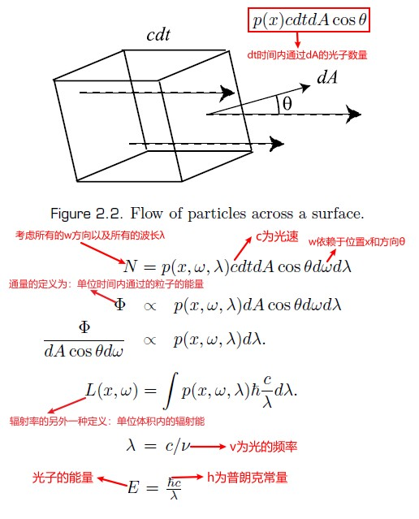
Relationships between Radiometric Quantities
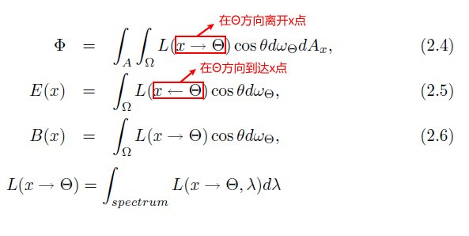
辐射度学中的物理量具有波长依赖性。即这些物理量不仅依赖于位置和方向，而且依赖于光的波长。当显示指定波长时，例如，上图中最后的物理量辐射率，其被称为光谱辐射率（spectral radiance）.光谱辐射率的单位为辐射率的单位除波长的单位。
波长依赖性通常隐式地作为全局光照方程的一部分，而不显示提及。
- Radiance and Spectral radiance https://en.wikipedia.org/wiki/Radiance
Properties of Radiance 辐射率的属性
- 沿直线路径辐射率不变
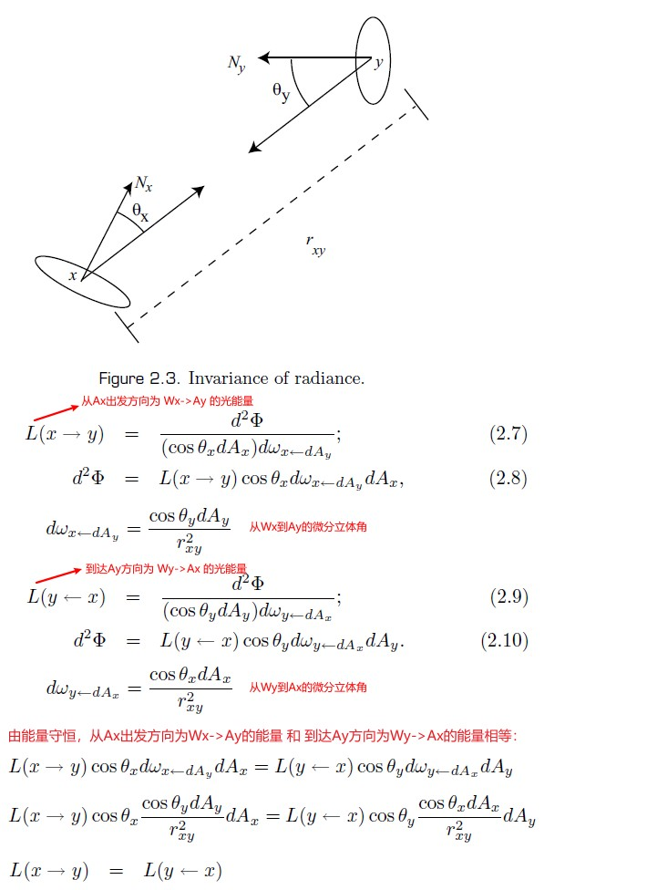 - 传感器（例如：摄像机和人眼）对辐射率敏感
传感器对入射辐射率的响应是成比例的，比例常数取决于传感器的几何属性。
上面的两个属性解释了，为什么我们感知到的物体的颜色和亮度不会随距离物体的远近变化而变化。辐射率的这两个属性也决定了，全局光照算法需要计算辐射率，将其展示给观察者。
Light Emission
光是加速电荷导致的电磁辐射。可以通过很多方式产生光；例如，类似太阳的热源，或者类似荧光的量子效应(材质吸收某波长的能量而发射出其他波长的额能量)。图形学中不考虑具体的量子机制来解释光，光被假定为从光源发出，并有特定的波长和特定的强度。
全局光照算法需要知道每个光源的空间、方向以及光谱强度分布。
Interaction of Light with Surfaces
BRDF
只考虑光在表面上入射的点和出射的点相同的情况(光的入射位置和出射位置相同，忽略次表面散射)，该情况下表面的反射率属性可以通过 BRDF 函数来描述：
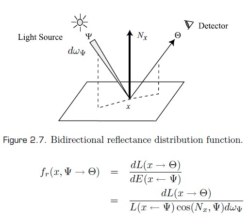
BRDF 的属性
范围
BRDF 可以为任意正值(其范围为[0,∞])，其值可随波长变化
维度
BRDF 是定义在表面上的 4 维函数，两个维度对应于入射方向，另外两个维度对应于出射方向。通常 BRDF 为各项异性的，即表面绕法线旋转，brdf 的值会改变，但是，也有很多材质是各项同性的。
互换性
如果入射方向和出射方向互换，brdf 保持不变。直观上来说就是，翻转光的方向，光的反射量不变。
入射辐射率和反射辐射率的关系
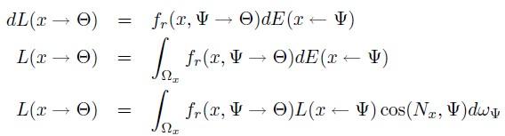
BRDF Example
材质表现为漫反射表面还是镜面或者光泽表面，依赖于 brdf 的性质。
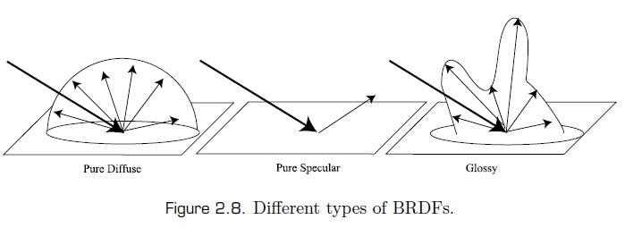
Diffuse Surfaces
一些材质会均匀地将光反射到半球空间中。反射辐射率独立于出射方向。这类材质的 brdf 为定值。
Specular Surfaces
完美的镜面表面只会将光反射或折射到特定方向上。
- 镜面反射
镜面反射的反射方向可以通过反射定律得到，即反射角等于入射角。完美镜面反射，brdf 只在一个出射方向上不为 0，其他所有方向都为 0，其隐含的意思就是 brdf 在一个特定的出射方向上值为无穷大。
- 镜面折射
镜面折射的折射方向可以通过 Snell 定律得到，η1 sinθ1 = η2 sinθ2。
当光从稠密介质进入稀薄介质，光可以被折射回稠密介质。这个过程被称为全反射，此时的入射角被称为临界角(下面的θc 就是临界角)。
η1 sin(θc) = η2 sin(π/2)
- Reciprocity for transparent surfaces 透明表面的互换性
由 Snell 定律可得，当一束光从稀薄介质进入稠密介质时，这束光会被压缩（光线会向 normal 方向偏转）。因此，单位区域内的光能量会变高。当光束离开稠密介质进入稀薄介质时，会发生相反的过程，光线会偏转到远离 normal 的方向。这说明互换入射方向和折射方向能量会变化，因此互换性对于折射是不成立的。
在前面描述的过程中，光线密度变化为折射率的平方比值。当计算透明表面的辐射率时，需要考虑该因素。
- 菲涅尔方程
菲涅尔推导出了一系列方程，被称为菲涅尔方程，其可以描述在完美镜面表面上，入射光被反射和被折射的量。
当光入射到完美光滑表面上，被反射的光的量取决于光的波长、表面的几何属性以及入射光的方向。菲涅尔方程给出了被反射的光的量，其考虑了光的偏振。
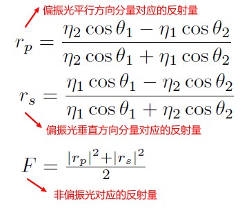
上面的方程同时适用于金属和非金属，对于金属其折射率为复数：n+ik，而对于非金属其折射率为实数：n+0i.
在完美镜面表面上，菲涅尔方程假定光不是被反射就是被折射，其不考虑光的吸收，反射系数和折射系数的和加起来为 1.
Glossy Surfaces
大多数表面既不是理想的漫反射表面也不是理想的镜面反射表面，而是展现出这两种反射行为的组合，这类表面被称为光泽表面。很难使用解析形式来对这种表面的 brdf 进行建模。
Shading Models
真实材质的 BRDF 非常复杂。在图形学中，有各种各样的模型用于描述复杂的 BRDF。
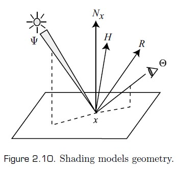
Lambert model
理想漫反射材质的 BRDF 为常数。
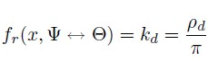
Phong model
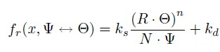
BlinnPhong model
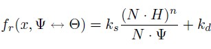
Modified BlinnPhong model
Phong 模型不是能量守恒的，Phong 模型也不满足 Helmholtz 的互换性，其无法捕捉真实材质的很多行为。
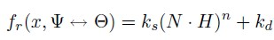
Physically Based Shading Models
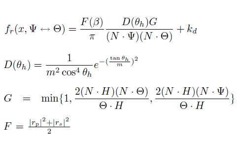
注意： fr 公式中分母中的π，应该是 4，书中内容应该是错的。
Empirical Models
基于经验数据推导的模型。这类模型的目标是易于使用，以及直观的参数化 brdf。
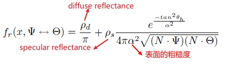
Rendering Equation
Hemispherical Formulation 半球公式
半球公式是最常用的渲染方程之一。
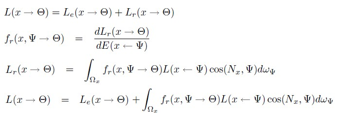
Area Formulation 区域公式
当考虑场景中物体的表面对 x 点处的入射辐射率贡献时，会使用 Area Formulation 形式的渲染方程。Area Formulation 形式的渲染方程不是在半球上进行积分，而是在从 x 点可见的表面上积分。
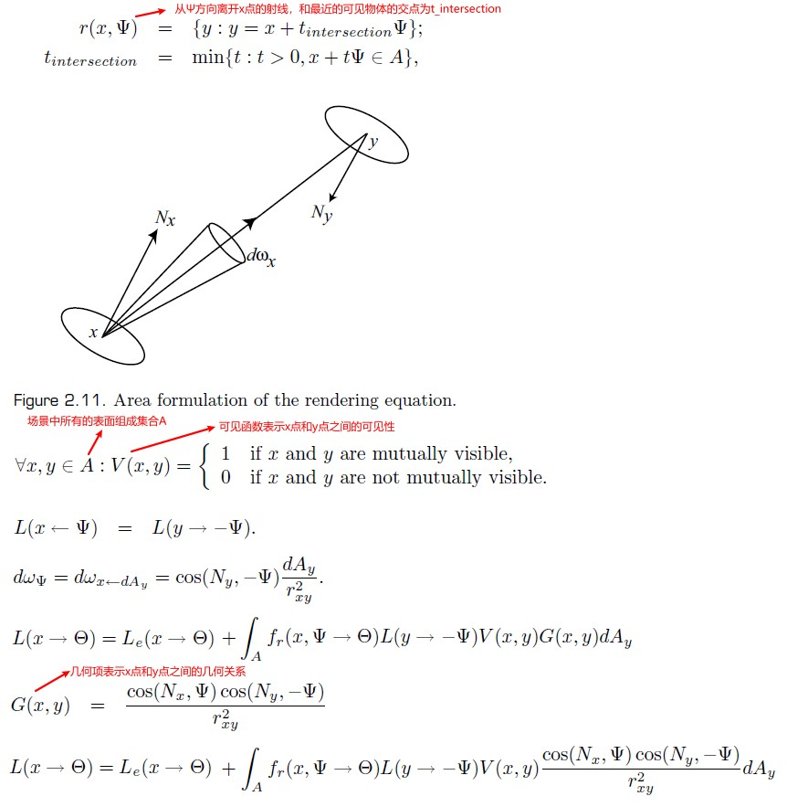
Direct and Indirect Illumination Formulation
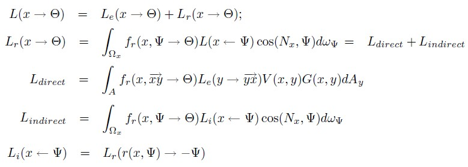